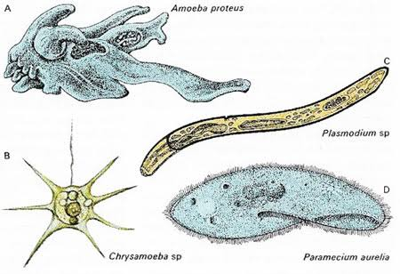

Protozoa
Introduction To Protozoa
Protozoa are single-celled eukaryotes. It was these small bugs that Hook observed with the most primitive microscope, and only the research of modern microorganisms.
- In the food chain protozoa act as a first-class consumer and support the organisms above the food chain;
- In the environment they can move by flagella, cilia or pseudopods
- In wastewater treatment plants protozoa play an important role in reducing the number of bacteria.
They also help ruminants break down food in the stomach. But some protozoa such as Giardia lamblia cause diarrhea, making people sick and unwilling to live.
They also help ruminants break down food in the stomach. But some protozoa such as Giardia lamblia cause diarrhea, making people sick and unwilling to live.
Protozoa are also used in Oil Exploration: Petroleum is organic origin. The skeletal deposit of Forminifera and Radiolaria are often found in association with oil deposits. In this mean; they help in the exact location of oil.
Disadvantages Of Protozoa
Drinking water in natural condition is made unpalatable by the reproduction of some free-living protozoa in it. For example, Uroglenopsis brings flashy odour like that of cod- liver oil. Peridinium emits smell resembling that of clam-shells.
dinoflagellates like Noctiluca and Gonyaulax, when become abundant, are responsible for turning the ocean red. The water becomes foul and cause toxic reaction to molluscs like clam oysters and mussels and they become unfit for eating by human beings.
Some flagellater like Trichonympha and Colonympha live in the gut of termites and help in the process of cellulose digestion. In the absence of these flagellates the termites will die or change their diet. Thus such protozoa indirectly help in distraction of wooden articles and books.